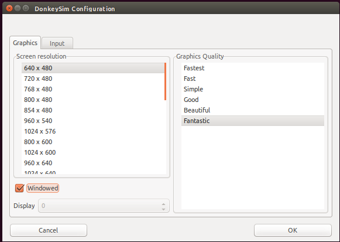
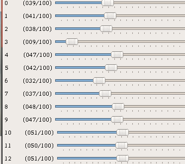

Reinforcement Learning Lab
Introduction
Objective: This lab exercise introduces deep reinforcement learning (Deep RL) for autonomous driving in simulation, using only a camera for sensing.
Reinforcement learning is distinct from imitation learning: here, the robot learns to explore the environment on its own, with practically no prior information about the world or itself. Through exploration and reinforcement of behaviors which net reward, rather than human-provided examples of behavior to imitate, a robot has the potential to learn novel, optimal techniques which exceed the abilities of humans. Atari games, Go, and StarCraft are a few well-known settings in which Deep RL algorithms have approached or surpassed human expertise.
This lab relies on providing the robot with a simulation environment to use as a sandbox for exploration. In particular, we will use a Unity-based simulation environment originally developed by Tawn Kramer for the DonkeyCar RC platform.
This lab exercise relies on a Deep RL demonstration by Antonin Raffin, which uses Proximal Policy Optimization (PPO) and Soft Actor-Critic (SAC) to quickly train the simulated DonkeyCar to drive on a randomly generated track. This demonstration is itself a fork of an earlier repository by Roma Sokolkov, which leveraged another Deep RL algorithm Deep Deterministic Policy Gradient (DDPG) in the simulator.
It is instructive to review Antonin Raffin's blogpost regarding the testing he conducted, for ideas and background, as you work on the lab.
For the lab exercise we have forked Antonin Raffin's repository in case there are any lab-specific changes to distribute, but the lab fork is otherwise simply tracking the upstream repo by the original authors (Raffin, Sokolov, Kramer, and other contributors/sources):
Cloning the lab locally:
$ git clone https://github.com/mmaz/learning-to-drive-in-5-minutes
A review of Reinforcement Learning
If needed, OpenAI's Spinning Up in Deep RL is an excellent way to review in greater depth the concepts discussed during lecture. In particular, the lab is based on topics covered in these sections:
- Basic concepts in RL
- The derivation of policy gradients
- The "vanilla PG" algorithm
- Proximal Policy Optimization (PPO)
- Soft Actor-Critic (SAC)
Gym Interface
"Gym" interfaces refer to a de facto-standard for reinforcement learning in simulation, popularized by OpenAI's Gym environment. Simulation environments frequently support variants of the following two calls:
reset()step()
Calls to step() usually take in actions and return the next state, observed reward (if any), and auxillary information such as whether the episode is over (allowing the RL algorithm time to make decisions and optionally reset() the environment for the next episode). For a more in-depth explanation on the concepts in a Gym API, read http://gym.openai.com/docs/.
State-space Dimensionality Reduction
A variational autoencoder or VAE is used to reduce the size of the state space that the policy must consider at training and inference time. The state space is represented as a small vector of floating point numbers (e.g., 20-30) taken from the VAE's bottleneck encoding (i.e., the "latent space" encoding), instead of the full image.
This lecture from Prof. Ali Ghodsi at the University of Waterloo is an excellent, brief, and self-contained introduction to the theory and implementation of VAEs. For additional reading, please consult one or more of these references (or inquire during office hours/over Slack):
- Ali Ghodsi's lecture: https://www.youtube.com/watch?v=uaaqyVS9-rM
- https://jaan.io/what-is-variational-autoencoder-vae-tutorial/
- https://www.tensorflow.org/alpha/tutorials/generative/cvae
- https://blog.keras.io/building-autoencoders-in-keras.html
- Fast-forward Labs blog Part 1 and Part 2
Part 1: Downloading the DonkeyCar simulation environment
The following link is a Linux build of the Unity Donkey simulation environment from the original author:
Note
The simulation can also be built from source for other platforms, from the donkey tree of the sdsandbox repo using the Unity development platform.
Starting the simulator
After unzipping the folder and changing into the directory, launch the simulator with:
$ ./build_sdsandbox.x86_64
I suggest the following settings of 640x480, windowed, and Fantastic rendering quality (but this wll depend on your graphics support):

Simulator implementations of OpenAI Gym functions:
The following links to the simulator's Gym API implementation are provided as reference for your experimentation (changing the implementation is not necessary however). Note that editing these implementations will not require rebuilidng the simulator, making experimentation easier to conduct.
step()is implemented through several callbacks:take_action()calc_reward()- note that this depends implicitly on the cross-track error reported by the simulatoron_telemetry()This recieves data from the simulator, including- front-bumper images from the simulated DonkeyCar
- current steering angle and velocity
- cross-track error ("cte")
reset()sets all counters to zerois_game_over()is simply a combination of checking for collisions (not present in level 0) or crossing a threshhold of tolerated cross-track error
Part 2: Installing Deep RL python dependencies
Heads up!
If you are using an account on the NEET server, skip this step! These dependencies are already installed.
- If you do not have a GPU on your computer:
# Use TensorFlow without a GPU
$ conda env create -f environment.yml
- Otherwise, if you do have a GPU:
# Use TensorFlow with a GPU
$ conda env create -f environment-gpu.yml
Part 3: Training a policy with a pre-trained VAE
First, download the pre-trained VAE from the author's Google Drive folder for Level0 in the same directory you cloned the repository into.
Next, launch the Unity environment (if it is not already running from Part 1)
To launch a newly initialized training run for the PPO algorithm across 5000 iterations, run the following command:
$ python train.py --algo ppo -vae vae-level-0-dim-32.pkl -n 5000
Alternatively, to launch a training run for Soft Actor-Critic (SAC):
$ python train.py --algo sac -vae vae-level-0-dim-32.pkl -n 5000
Part 4: Experimenting with Deep RL
Once you have tried training a policy in the simulation environment, you can experiment with changing the existing algorithms, or try a different Deep RL algorithm altogether, such as TRPO, TD3, etc.
The goal of this section of the lab is to gain some intuition and experience with training the vehicle's policy using deep reinforcement learning, through modifying the existing code, hyperparameters, and algorithms, or by incorporating new algorithms. Your experimentation can target one or more threads of investigation (this is a non-exhaustive list):
- What is the effect of tuning hyperparameters on the convergence time and robustness (or lack thereof) of algorithms like PPO and SAC?
- What changes to the algorithm can be made to improve convergence behaviors and the robustness of the learned policy?
Here are a few examples of things to try:
- Train a policy that can drive on random roads (the simulator is currently set up to use the same road for every episode)
TBD
Part 5: Retraining the VAE
You can sample from the pre-trained VAE's manifold with the following command:
$ python -m vae.enjoy_latent -vae vae-level-0-dim-32.pkl
You can move some of the sliders around and "generate" new views of the track by running the encoded representation through the deconvolutional portion of the VAE network.

See the video below for an example output:
TBD